In this 2 weeks we are given the assignment of practicing laser cutting techniques learned from the lecture to make press-fit kits. That means, we should do some experiments to find out the kerf of the material we are using such that the parts fit perfectly together without additional glue or tape, etc.
While looking for inspirations for the assignment, I came across this documentation from a former Fabacademy student named Henry Skup who made this cool triangular module that can be fitted together to build bigger structures. Thus, I decided to replicate his module to do the laser cutting.
First I started out with choosing the material because the kerf to be measured also depends on the type of material used. Using 3 mm MDF and the Epilog Zing laser cutter, I cut 10 rectangular pieces of size 18mm(width) * 27mm(height) each.
Then I put the pieces together to measure the total height and width. Due to the limited range of the caliper, I could not measure for all 10 pieces but only 8 pieces for the width and 5 pieces for the height.
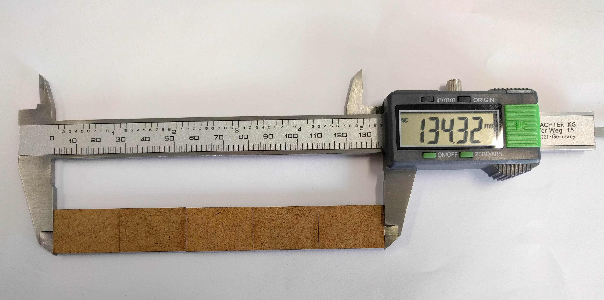The total length measured for 8 pieces' width is 142.95 mm, while the expected value is 8*18 = 144 mm. This means the kerf for the horizontal direction of the laser cutter is (144 - 142.95)/8 = 0.131 mm.
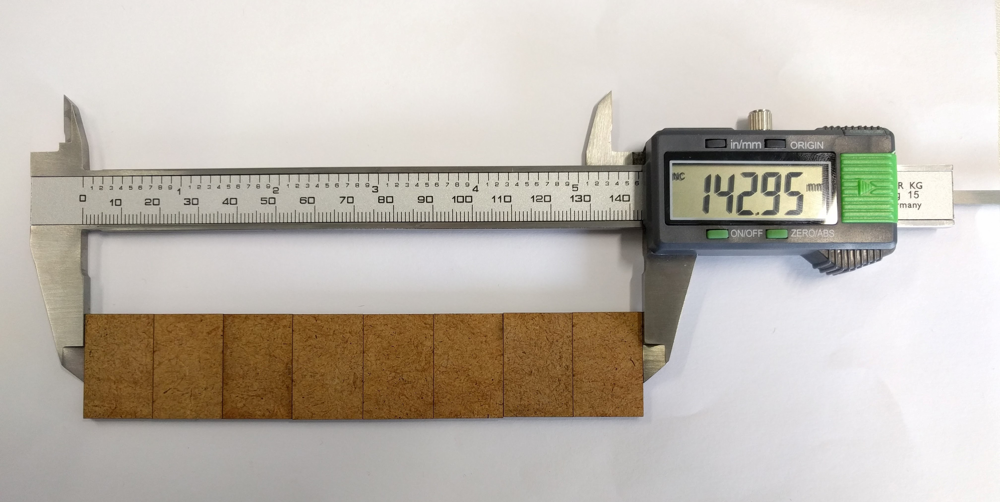The total length measured for 5 pieces' height is 134.32 mm, while the expected value is 5*27 = 135 mm. This means the kerf for the vertical direction of the laser cutter is (135 - 134.32)/5 = 0.137 mm.
This means the kerf I need to use for the material is around 0.13mm. Having this in mind, I start to design the module in Rhinoceros 5.0 (Evaluation Version) software.
Unfortunately on the documentation website of Henry Skup neither the DXF file for the module nor the module's measurement details are available, thus I had to do some trials and errors to make the design.
First I started out by drawing an isosceles triangle, then drew some construction lines to find the center point of the triangle and to draw the slots and the joints for the module. The dimensions I used were as following:
POLYGON #to draw the triangle
LINE #to draw the construction lines
RECTANGLE #to draw the rectangles
ROTATE #to rotate the rectangles
ARC #to draw the "claws"
ARRAYPOLAR #to make a circular pattern out of the rectangles, lines and curves about the center
This is how the piece looks with all construction lines and dimensions:
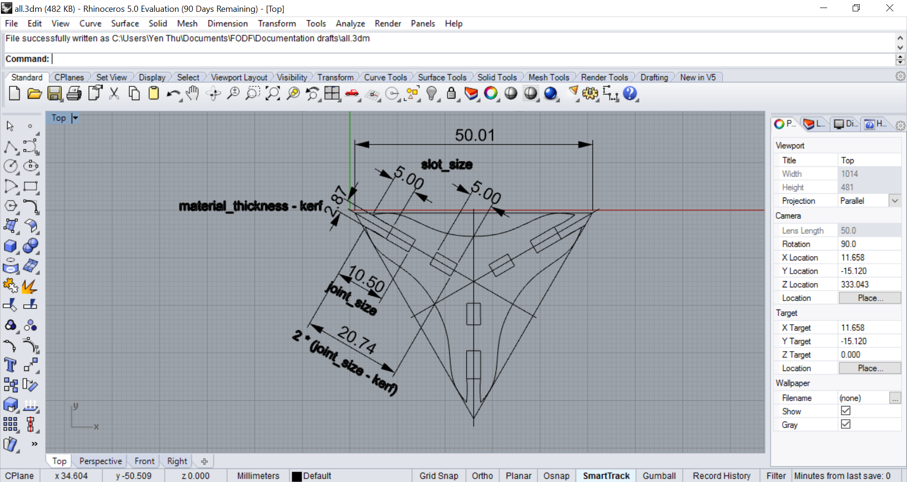And without the construction lines:
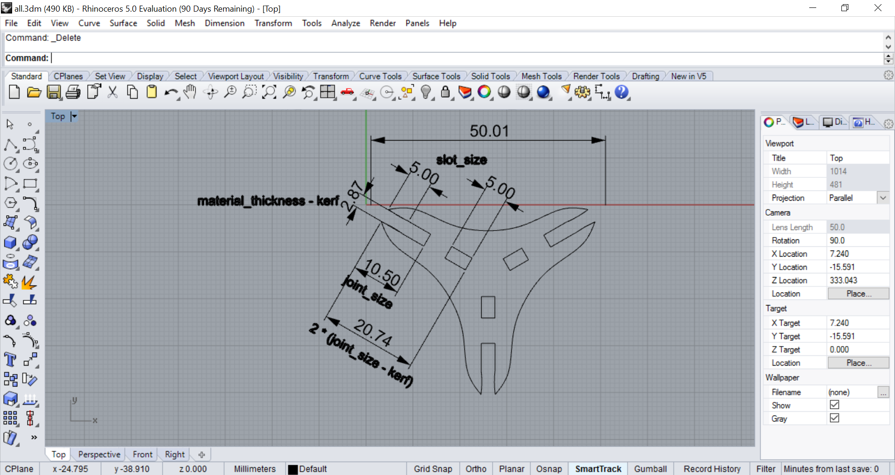Finally I exported the piece into DXF file and bring it to the PC of the laser cutter.
An important thing to do before using the laser cutter is of course to focus the laser for the material. For the Epilog Zing, this is done by pressing the Unlock key and then the Up or Down key to raise or lower the bed until the end of the focus tool just touches the surface of the material. Similarly for the Epilog Fusion, the tip of the focus tool should also touch the material surface:
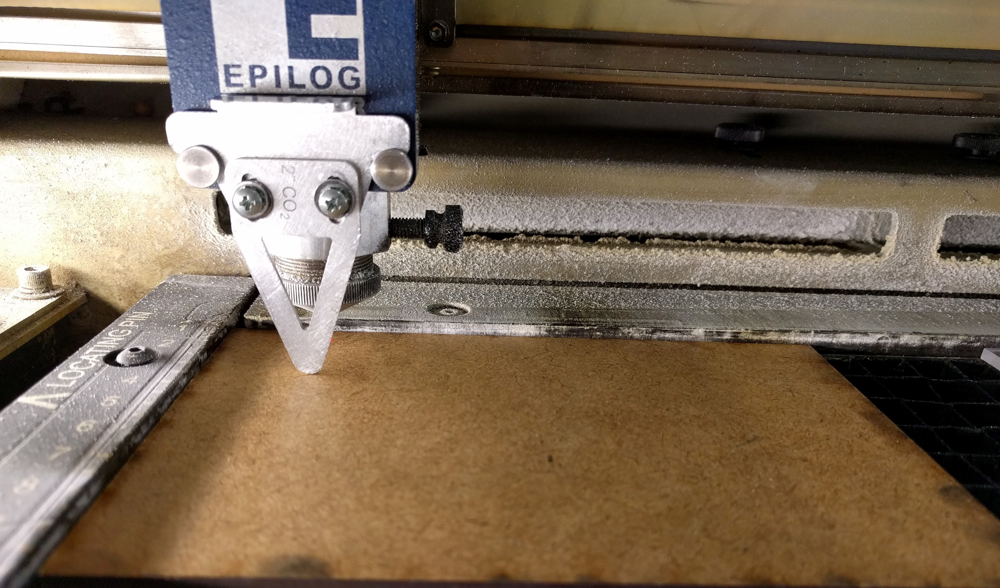Next, I have to set the starting point of the job by manually moving the laser pointer (the pink/red point in picture below) along the X or Y axis to the desired point. For example, I usually set this to the top left corner of the piece of material:
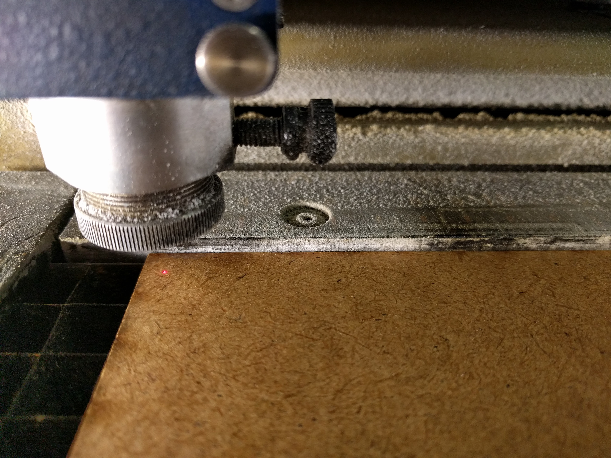Then I opened the DXF file in Rhinoceros on the laser cutter's computer and made a copy of it so that I have at least 2 pieces to test the joints.
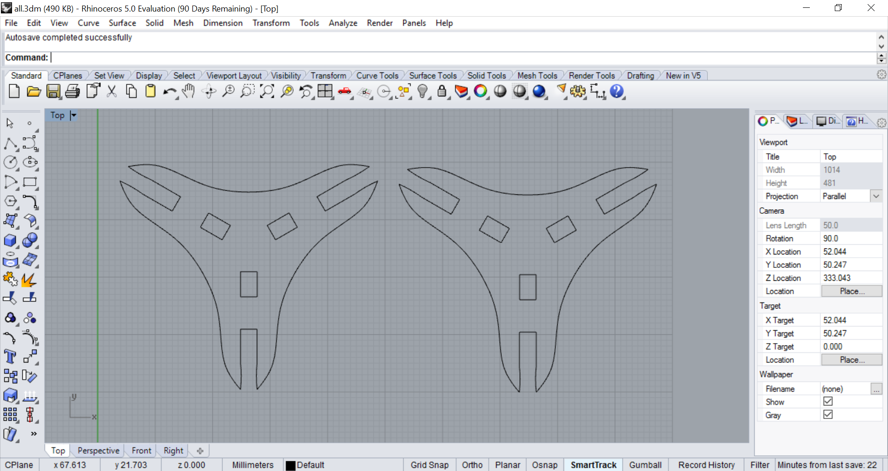Next I press Ctrl + P to open the print menu, choose the correct printer which is the Epilog Zing and click on Properties to bring up the settings for the job. I have tested cutting 3mm MDF with this laser cutter beforehand and found out the following Speed, Power, Frequency combination works well:
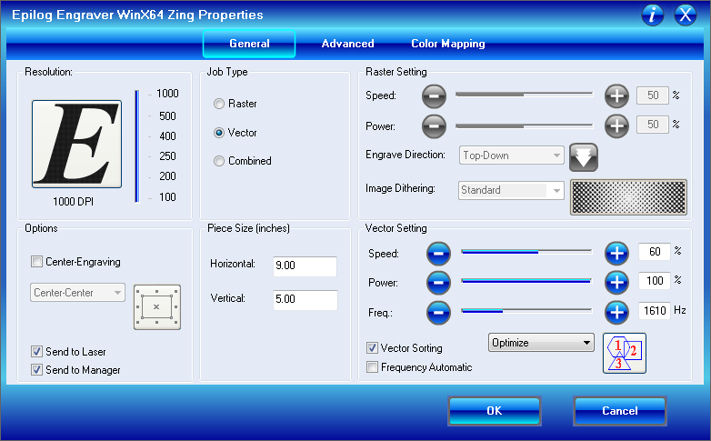I also put in the size of the piece I am using and the Job Type is Vector because I am only cutting and not engraving on the material. Then I press OK and then Print to send the job to the machine. When the job is shown on the machine's screen, I turn on the Vaccumm system and then press Start.
This was the result of the job:
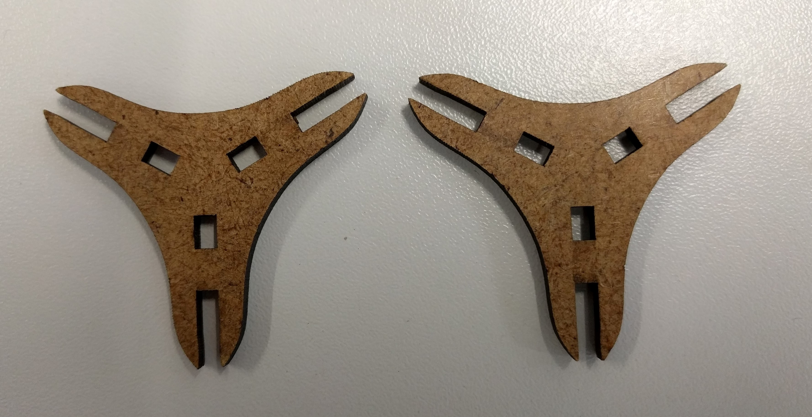And this is how it looks when I press them together:
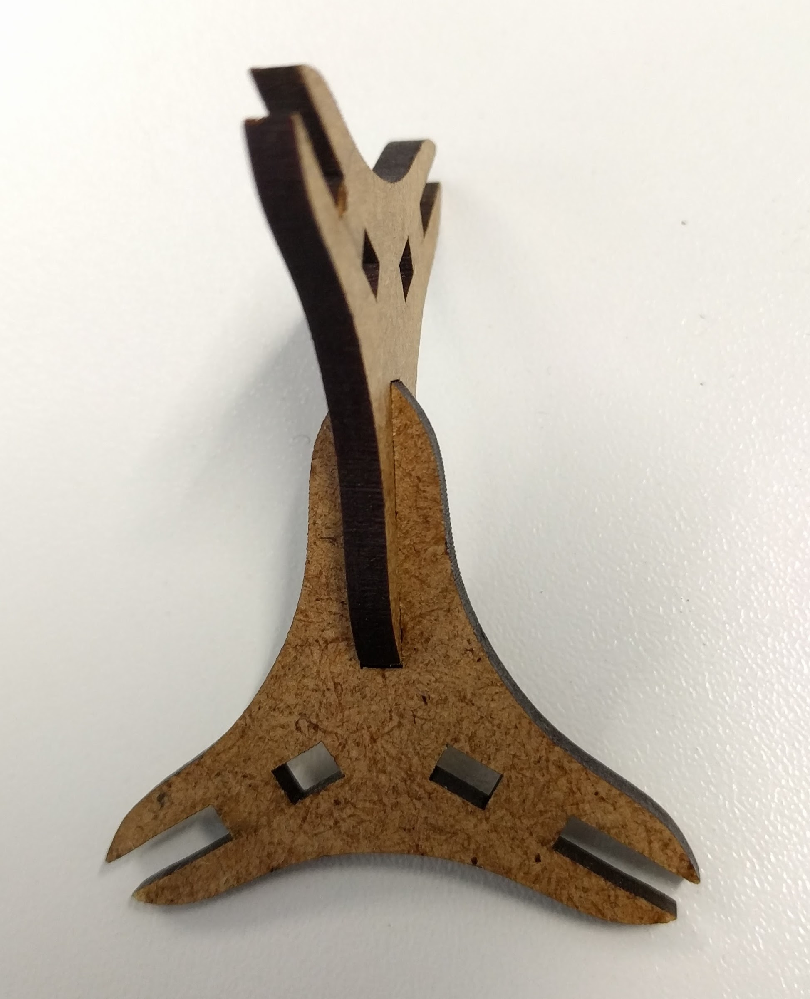Afterwards, I cut a few more pieces, and also tried cutting them with the Epilog Fusion instead to see if they also fit well when cut on another laser cutter. Luckily, but of course is not always the case, they still fit well. This was the settings I used on Epilog Fusion:
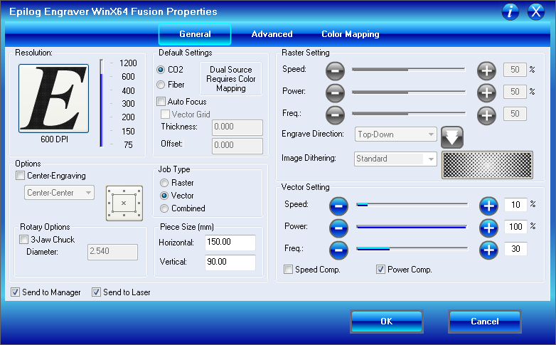Finally I could build a more defined structure using multiple pieces:
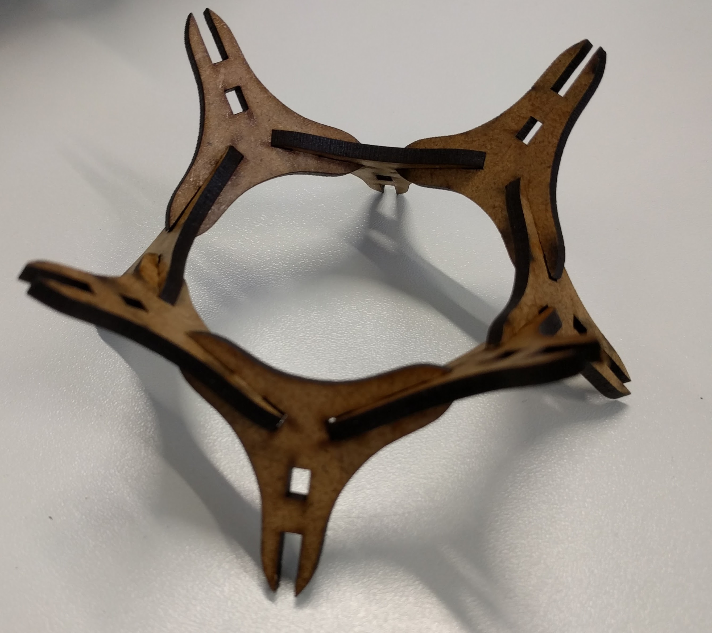It does not make a lot of sense to do engraving on the small modular pieces that were laser-cut, so I decided to engrave a photo on 3mm acrylic glass instead and to make a key chain out of it. This was the photo I wanted to engrave:
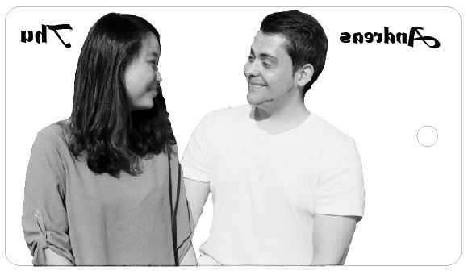I also added some texts to the image. Just one thing to note when engraving with acrylic glass is to mirror the image so that later on it is possible to view the image from the other flat side of the material.
And here was the settings I used for engraving the acrylic and cutting out the piece:
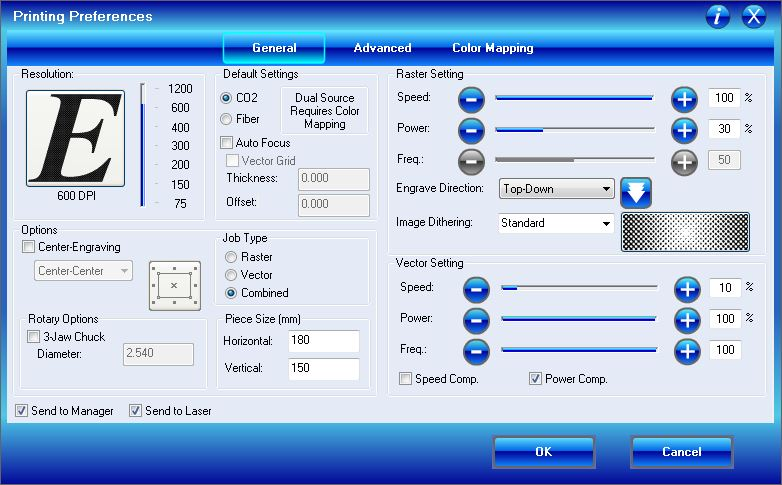Finally I has my engraved keychain which looks like negative film on black background:
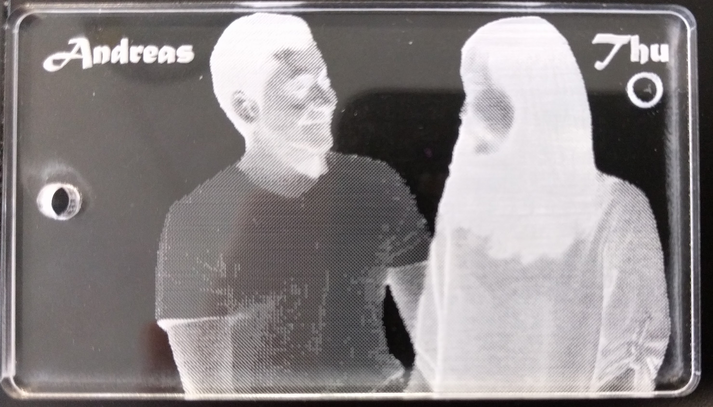but it looks perfect on white background:
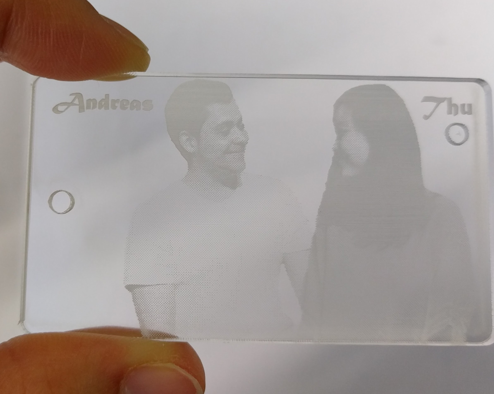(the circle under my name is because I used a scrap piece of acrylic glass available from the Lab because I did not want to waste it.)
The problems I encountered this week was first the unfamiliarity when designing in Rhinoceros because I have not used it before. But luckily after some practice and also because of some similarity it shares with Draftsight, in the end I still managed to finish the design.
Another problem was, because of the lack of dimension details for the piece I had to do some trials to get the acceptable dimensions. For example, in the beginning, the pieces did not fit perfectly together because I did some wrong calculations for the dimensions:
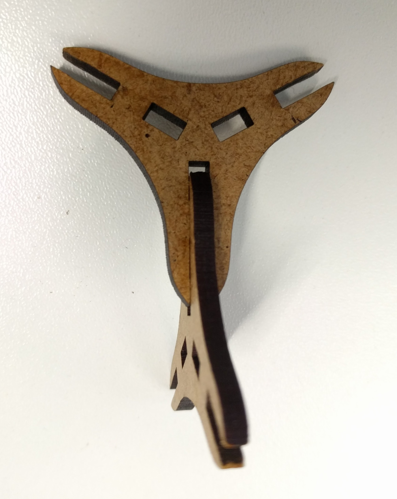After that, I calculated the dimensions again and adjusted the design so it worked in the end.
The DXF file for the modular triangle piece can be downloaded here.